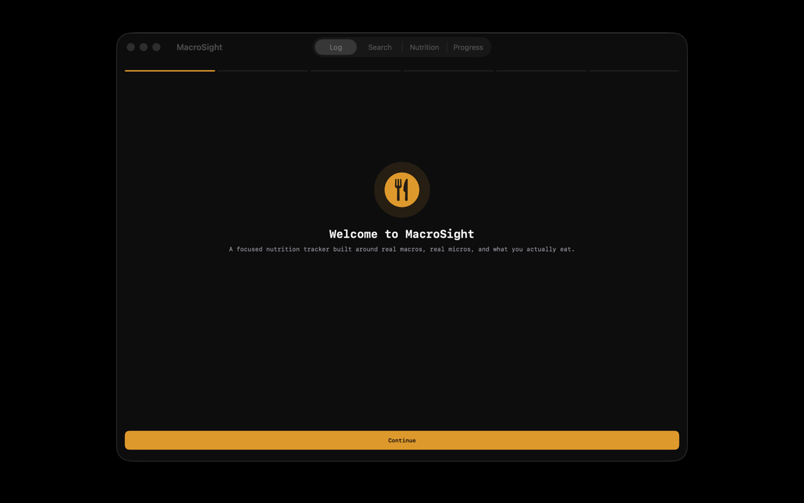
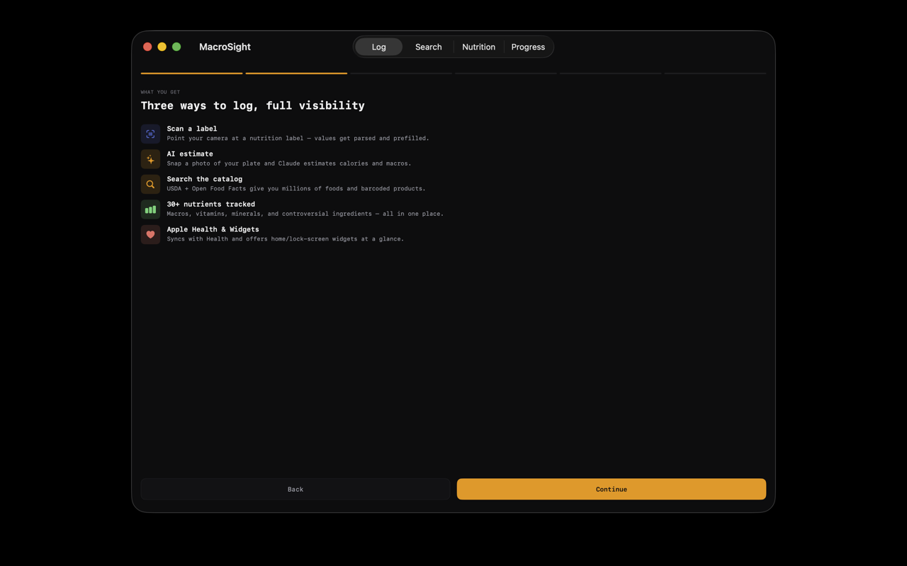
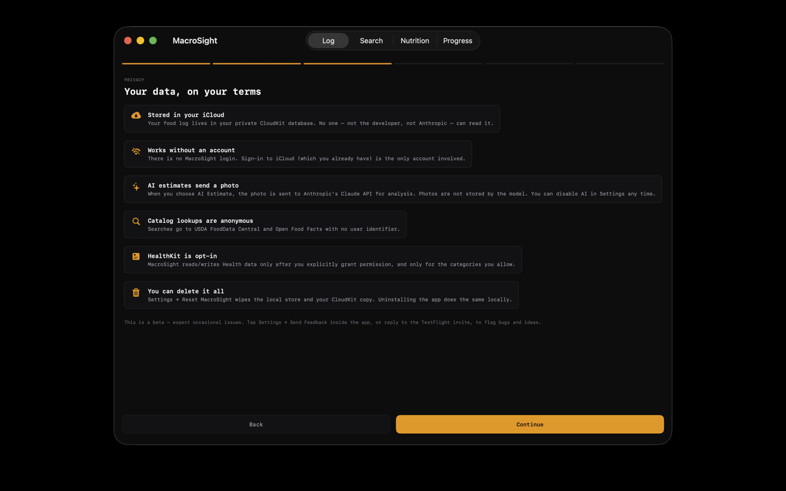
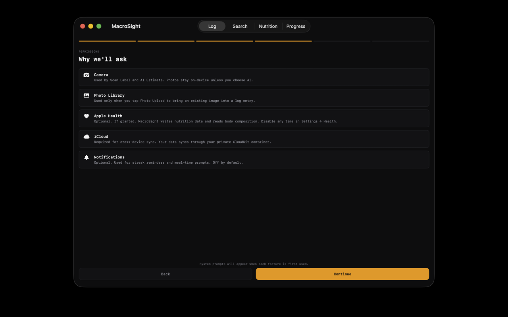
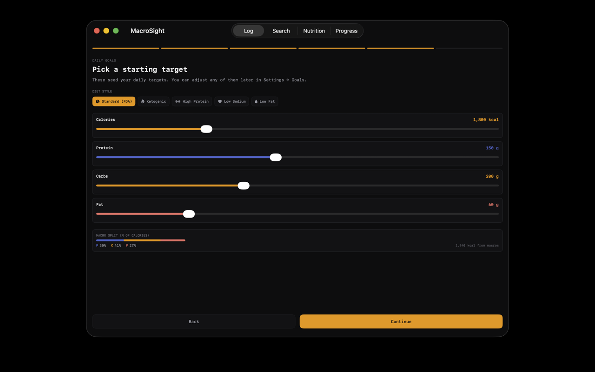
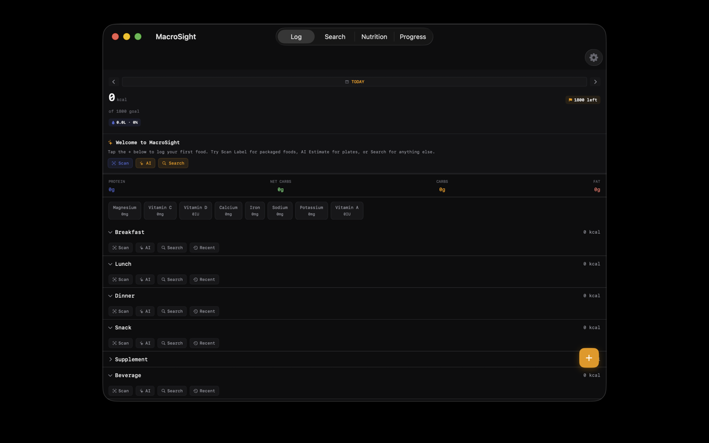
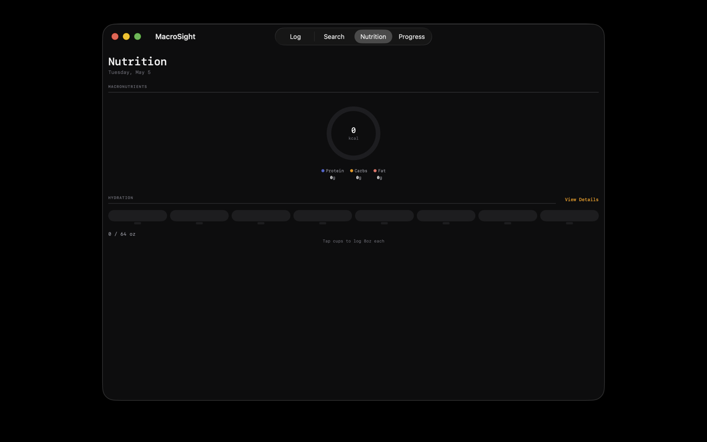

01 · capture
Scan, snap, or search
Barcode lookup against USDA + Open Food Facts. OCR for label scans. AI estimation from a meal photo. Search by name when none of the above will do.
MacroSight logs every meal, scans every label, and estimates macros from a photo — without sending anything to a server we own. Your food log lives in your private iCloud database. We never see it.

Built dense, monospaced, and dark on purpose. Everything you log fits in the same precise grid as everything you've already logged.
Barcode lookup against USDA + Open Food Facts. OCR for label scans. AI estimation from a meal photo. Search by name when none of the above will do.
Use your Anthropic API key for cloud Claude estimation, or toggle Apple's on-device Foundation Model for zero-network inference. We never proxy through a server we own.
Reads weight and body composition to personalize daily targets. Writes calories, macros, micros, and water back to Health so the rest of your stack can use it.
Your entries sync across iPhone, iPad, Mac, and Watch through your private CloudKit database. There's no MacroSight account because there's nothing to sign into.
Today's macros on your wrist and on your Home Screen. Lock Screen complications, Live Activities, and a Smart Stack widget that surfaces when you usually log.
No Mixpanel, no Amplitude, no Firebase, no advertising SDKs, no fingerprinting. The privacy report is short because there's nothing to report.
Macro colors aren't theming — they're a coding system. Once you learn them on the dashboard, every chart, ring, and chip in the app uses them the same way.
Dense, fast, monospaced numerals. Optimized for the moment you grab your laptop after dinner and want to be done in eight seconds.






The privacy story isn't a marketing claim — it's a property of how the app is built.
It lives in your private CloudKit database. The developer of this app has no read access. Apple operates the storage.
No Firebase, Mixpanel, Amplitude, Sentry, or homegrown event pipeline. Your usage is invisible to us — by absence, not by promise.
There is no ad SDK, no attribution framework, no IDFA request. There's nothing to sell because there's nothing collected.
No email, no phone, no Sign in with Apple. Your iCloud is the account.
The full accounting is in the privacy policy.
go to support@macrosightapp.com. Most questions are answered on the support page.